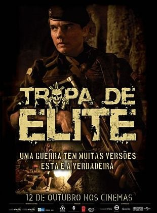
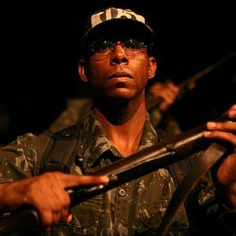
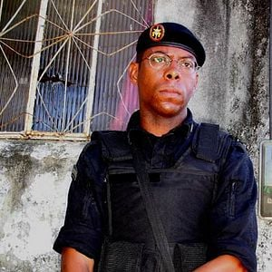
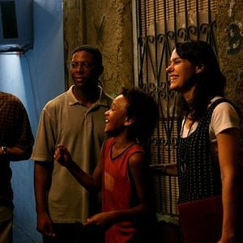
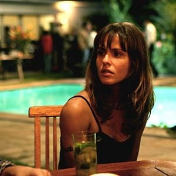
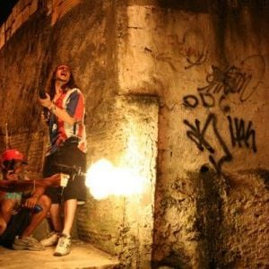

Tropa de Elite
O filme escolhido para esta edição do CINEMAR é Tropa de Elite (2007), dirigido por José Padilha.
A história acompanha o capitão Nascimento e os policiais Neto e Matias no Rio de Janeiro.
Ver programação
Destaques do filme

Capitão Nascimento
O protagonista conduz a história enquanto enfrenta a pressão do trabalho e procura um substituto.

O caminho de Matias
Entre a universidade e a carreira policial, Matias vive conflitos que atravessam a narrativa.
Além da farda
A vida dos estudantes e as relações pessoais ampliam os pontos de vista apresentados pelo filme.

Uma história em tensão
A montagem e a narração aproximam o espectador dos acontecimentos e das escolhas dos personagens.

Cinema e sociedade
Violência, desigualdade e responsabilidade são temas para uma conversa crítica após a sessão.

O Rio na tela
Os espaços urbanos e os contrastes de luz ajudam a construir a atmosfera da história.
Programação
Data e local a confirmar. Os horários abaixo são sugestões.
| Atividade | Horário |
|---|---|
| Abertura | 13h00 |
| Sessão: Tropa de Elite | 13h15 |
| Análise dos personagens | 15h15 |
| Roda de conversa | 15h35 |
| Oficina de narrativa e cenários | 15h55 |
| Debate sobre o filme | 16h20 |
Contato
Para mais informações, procure os responsáveis pelo projeto em sala.